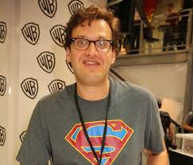

Andrew Kreisberg(23 de abril de 1971 51 anos)
Ele é um escritor e produtor da TV Americana. Seu primeiro trabalho foi Em Mission Hill Depois começou a escrever para seriados animados como Liga da Justiça, The Simpsons, Hope e Faith eBoston Legal Não há muita informações sobre ele.
Voltar a Página inicial.